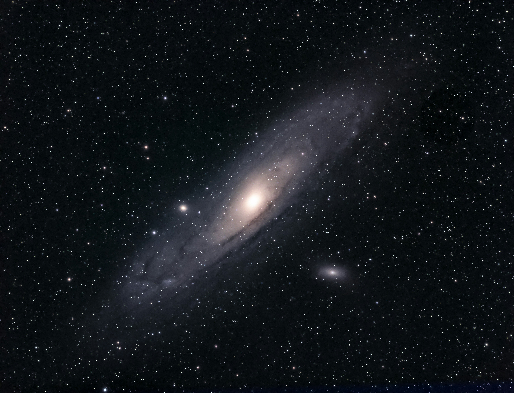
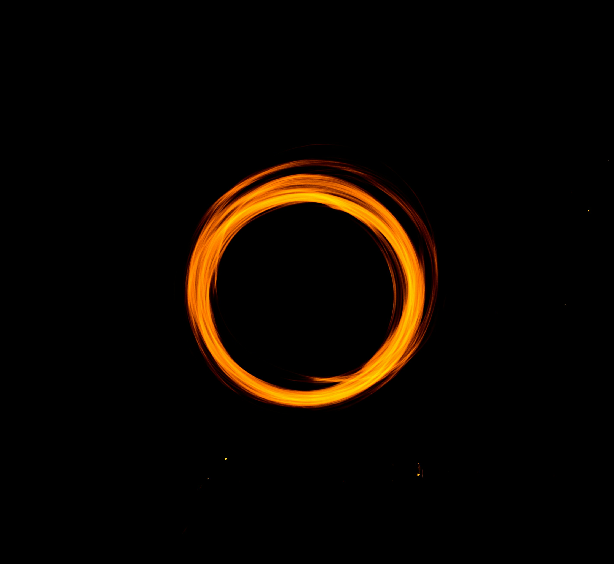
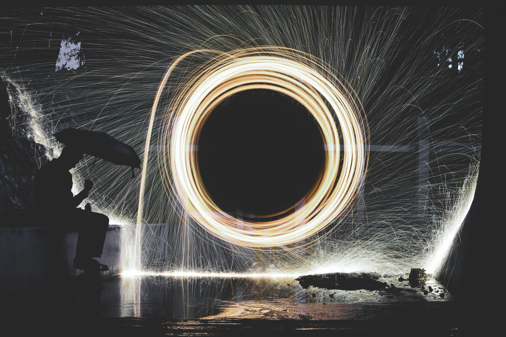
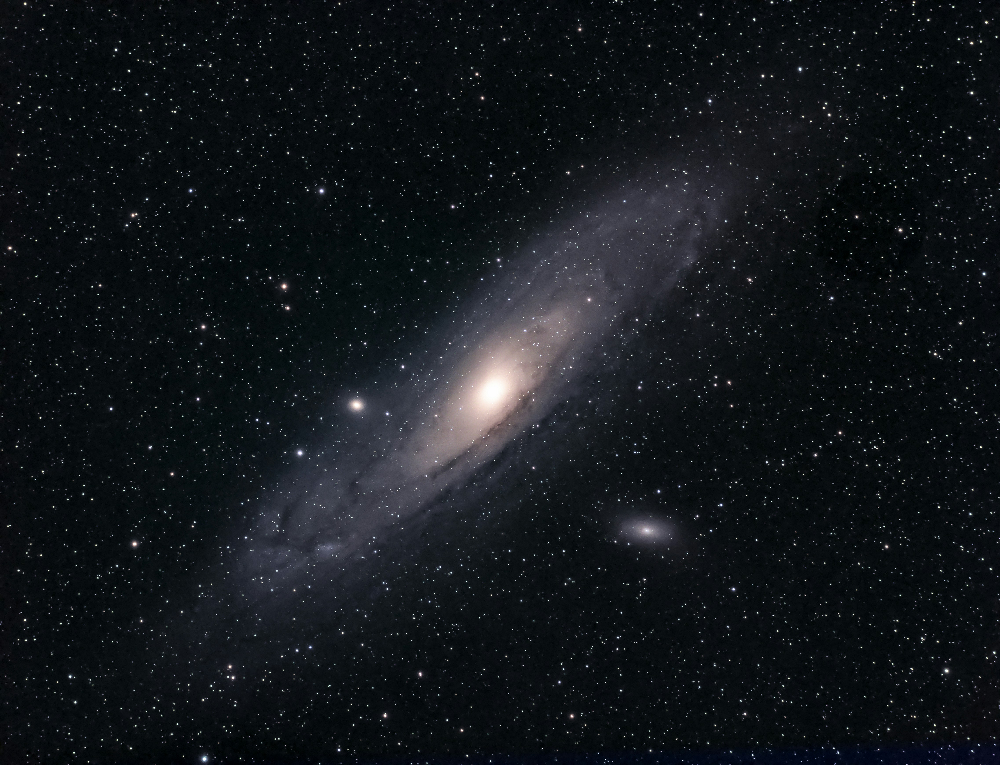
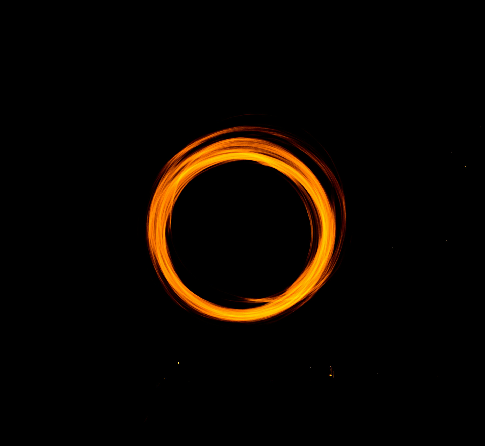
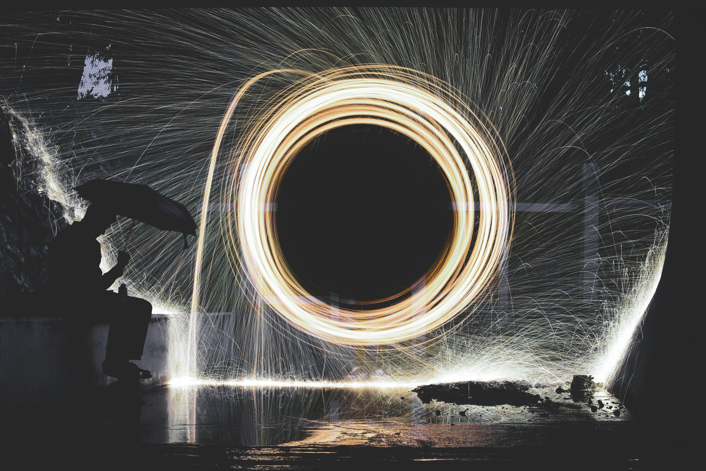
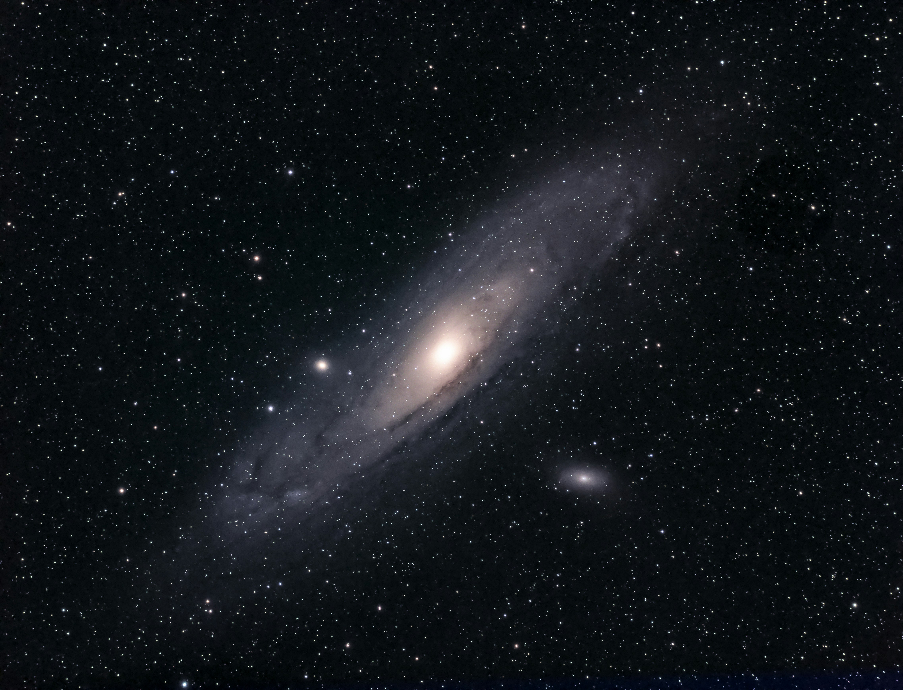
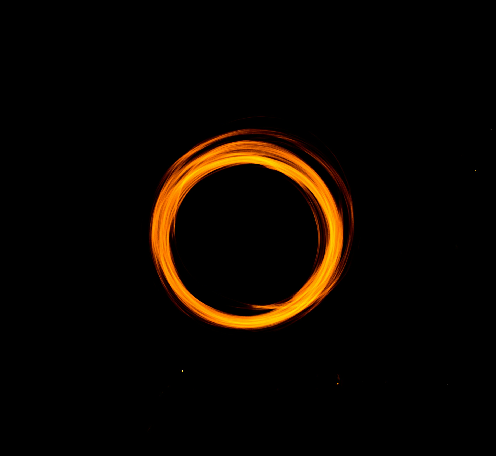
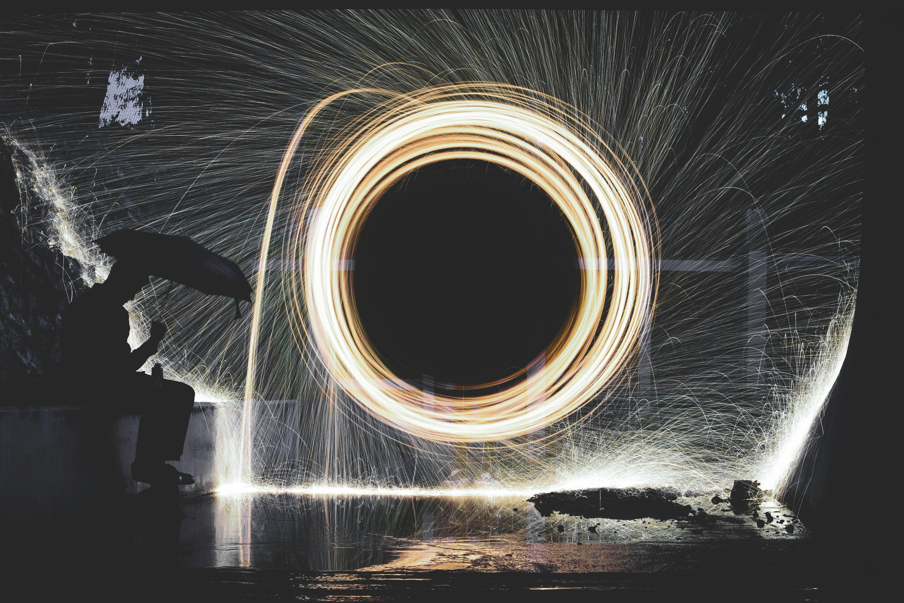

상대성이론이란? 물리학에서 상대성이론은 특수상대성이론과 일반상대성이론을 합친 것을 뜻한다.
전자는 아주 빠른 속도, 정확히 말해 광속에 가깝게 운동하는 물체의 운동학(kinematics)에 대한 내용을 담고 있고,
후자는 아주 무거운 물체가 주위에 미치는 힘을 다루는 동역학(dynamics)의 영역이다.
상대성이론은 알베르트 아인슈타인(A. Einstein, 1879-1955)이 제안하고 발전시켰는데,
특수상대성이론은 1905년 논문 '움직이는 물체의 전기역학에 대하여'와 '물체의 관성은 에너지에 관련되어 있는가?'에서 발표된 것으로,
일반상대론은 1915년에 프러시아 과학 아카데미에서 중력장 방정식을 발표한 것으로 기준을 삼고 있다.
상대성이론의 요점은 시간, 공간, 물질, 에너지의 통합이라고 할 수 있다.
이전까지의 물리학은 보통 뉴턴역학 혹은 고전물리학이라고 하는데,
시간과 공간은 별개의 것으로 어떤 관찰자에게나 동일하게 적용되는 절대적인 시간의 기준,
공간의 기준이 있다고 생각했다.
물질은 공간 안에서 시간에 따라 운동할 수 있는데,
시간과 공간은 절대적으로 주어진 일종의 무대로서 물질은 시간의 흐름과 공간 구조에 영향을 미칠 수 없다고 생각했다.
물질의 운동은 에너지를 변화시키는데, 따라서 에너지는 특정 물체의 중요한 성질이지만 분명히 구분되는 별개의 개념이었다.
상대성이론에서는 시간과 공간이 통합되어 시공간이라 하며 관측자의 운동에 따라 시간의 흐름, 공간적 측정이 달라질 수 있다.
그 결과를 함축적으로 담고 있는 현상이 시간 지연과 길이 수축이다. 물질과 에너지가 서로 전환 가능하다는 것을 의미하는 공식이 유명한 이다.
그리고 빛은 정지질량이 0이지만 에너지는 갖기 때문에 무거운 물체는 빛도 끌어당기며,
빛도 빠져 나오지 못할 만큼 큰 중력을 가진 물체라는 뜻에서 블랙홀이라는 용어가 유래되었다.
특수상대론의 기반이 되는 두 가지 가정이 있다. 하나는 서로에 대해 등속도로 운동하는 두 관찰자에게는 동일한 물리법칙이 적용된다는 것이고, 다른 하나는 모든 관찰자에게 빛의 속도는 완벽하게 동일하다는 것이다. 첫번째 원칙이 바로 상대성의 원칙이며 특수상대론이라는 이름의 근원이 된다고 할 수 있다. 두 번째 원칙은 광속 불변 원리로서 마이컬슨·몰리 실험에 의해 검증된 것이다. 고전역학, 즉 뉴턴역학의 영역에서 이 두 가지 가정은 서로 모순된다. 왜냐하면 고전역학에서 시간과 공간은 완전히 독립적이고 절대적이어서, 운동에 무관하게 같은 좌표계를 가지고 있게 되고, 상대적으로 운동하는 경우 관찰이 대상이 무엇이든 그 관찰되는 속도는 상대속도만큼 차이가 나게 되기 때문이다. 참고로 상대운동하는 두 관찰자의 관측 결과에 대한 고전역학의 이러한 가정을 갈릴레이의 상대성이라고 한다.
위에서 말한 두 가지 가정이 모두 사실이라면, 시간과 공간이 절대적이고 독립적이지 못하다는 것은 필연적이다. 두 관찰자의 시간, 공간 좌표는 로런츠변환에 의해 연결된다. 관찰자에 따라 두 사건이 일어난 시간 간격이 달라지기 때문에 시간 지연의 현상이 일어나게 된다. 공간도 마찬가지여서, 빠르게 운동하는 물체가 그 운동 방향에 대해 간격이 줄어드는 것으로 관측되는 길이 수축 현상이 생긴다. 빛의 속도는 물체가 가질 수 있는 최대의 속도값으로 기능하기 때문에, 물체의 속도가 커질수록 같은 힘을 가해도 더 가속되기가 어려워진다.
일반상대론은 뉴턴의 중력 이론을 대체하는 아인슈타인의 중력 이론이다. 뉴턴 이론이 기반하고 있는 운동학의 기본적 가정들을 특수상대론에서 폐기했기 때문에, 뉴턴의 중력 이론이 그 자체로는 특수상대론과 조화를 이루지 못하는 것은 당연한 일이다. 특수상대론을 발표한지 10년 후인 1915년에 발표되었다.
일반상대론의 기반이 되는 핵심적 원리는 등가원리이다. 이것은 가속운동과 중력을 받는 것 두 가지는 구분할 수 없다는 주장이다.
원래 특수상대론은 엄밀히 말해 두 관찰자가 서로 등속운동을 하는 경우에만 적용된다. 외부의 영향을 받거나 해서 가속운동을 하는 경우에는 적용할 수 없고, 더 일반적인 물리 법칙이 필요하다. 일상생활에서 자동차가 출발하거나 엘리베이터가 움직이기 시작하거나 할 때 느낄 수 있듯이, 운동이 변화하는 경우 우리는 외력을 받는 것처럼 느낀다. 뉴턴역학에서 이것은 관성력이라 하며, 비관성계에 있기 때문에 작용하는 것이고 실체는 없는, 일종의 가짜 힘으로 취급한다. 등가원리를 생각하게 되는 중요한 착안점은 자유낙하하는 물체가 아무런 힘도 느끼지 않는다는 것이다. 고전역학적으로는 중력의 영향과 비관성력이 정확히 상쇄되는 것이지만, 일반상대론에서는 휘어진 공간에 있는 물체가 시공간의 최단 경로, 즉 측지선을 따라 운동하는 것으로 통합적으로 이해한다. 좀 더 구체적으로, 아인슈타인의 장방정식은 물질의 에너지와 운동량이 어떻게 시공간의 측량 텐서를 결정하는지를 알려준다.


